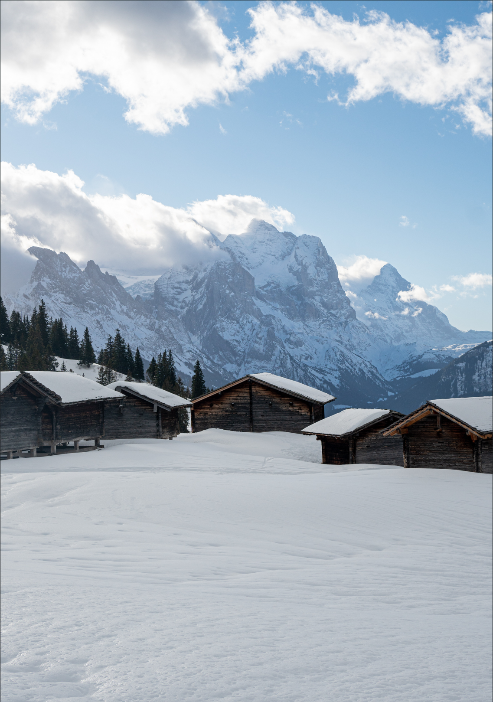

Latest News
Our Blog

A Foodie's Guide to Exploring Italy
Italy is a paradise for food lovers. Join us as we explore the rich culinary traditions of Italy, from the bustling markets of Rome to the vineyards of Tuscany. Learn about the best dishes to try, where to find them, and how to enjoy the ultimate Italian dining experience.
Read More

Exploring the Hidden Gems of Southeast Asia
Southeast Asia is full of hidden gems waiting to be discovered. From the remote beaches of the Philippines to the ancient temples of Cambodia, find out which off-the-beaten-path destinations should be on your travel list.
Read More
The Ultimate Guide to Solo Travel
Thinking about taking a solo trip? Our ultimate guide to solo travel will help you plan, stay safe, and make the most of your journey. Learn how to meet people, find the best places to stay, and navigate new cities on your own.
Read More